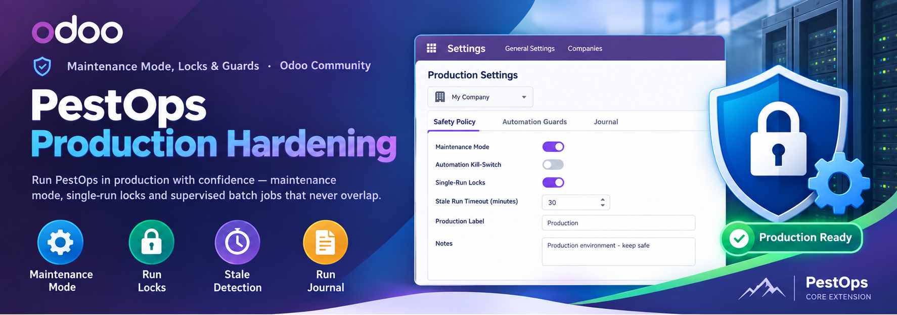
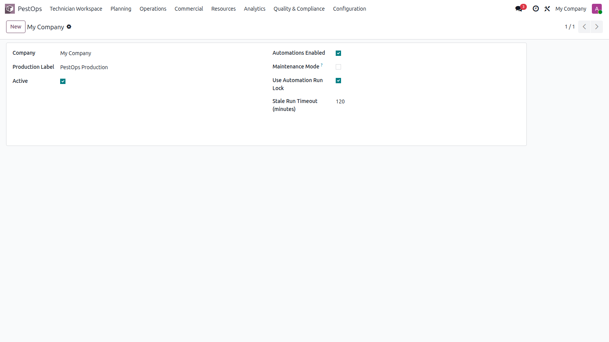

🛡️ Maintenance Mode, Locks & Guards · Odoo Community
🔧 Maintenance Mode 🔒 Run Locks ⏱️ Stale Detection 📋 Run Journal


Production settings for the company.
Nightly crons, overlapping workers and mid-upgrade jobs are where silent corruption starts. This module puts guardrails around all of it.
🌙 Nightly Crons 🔄 Upgrades 👥 Multi-Worker Servers 📈 Growing Fleets
One settings record per company centralizes the safety policy: maintenance mode (pauses non-essential automation), global automation kill-switch, single-run lock enforcement and stale-run timeout — with a free production label and notes for your runbooks.
Every automated batch registers an automation run with its key and start time; guards enforce single execution, detect runs that died mid-flight and release their locks after the timeout — all visible in a chronological run journal.
| Odoo Version | Community |
|---|---|
| License | LGPL-3 |
| Module Type | Extension (requires PestOps Core) |
| Dependencies | pestops_core |
| External Services | None required |
📧 imazighenapps@gmail.com — fast response 🔄 Free Updates